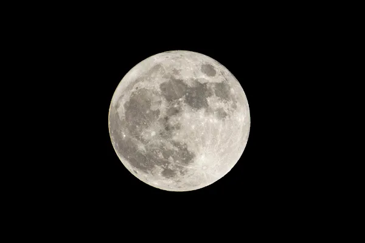

Ola Sol
Hoje esta ensolarado

O Sol é a estrela do sistema solar. Todos os corpos celestes desse sistema, inclusive a Terra, giram em torno dele.
Ola Lua
A Lua é o único satélite natural do planeta Terra.
A Lua é um corpo celeste localizado no Sistema Solar, mais precisamente nas proximidades da Terra, sendo o único satélite natural desse planeta. Há diversas teorias que explicam a formação lunar, no geral, derivadas de outros processos que geraram os demais corpos celestes, inclusive a próprio planeta Terra.